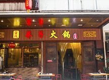
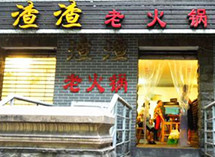
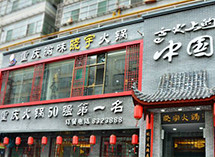
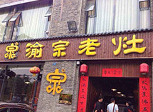
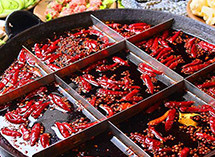
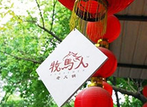

莽子老火锅
7km

火锅
解放碑
店铺介绍：解放碑片区最火味道最巴适的老火锅，没有之一。正宗的重庆老火锅，麻辣味很浓，特别纯正，最霸道的是他这里的毛肚和鸭肠，又新鲜口感又好吃起来又化渣，除了就餐环境差了一点之外其他毫无挑剔之处。

渣渣火锅
10km
火锅
两路口体育馆
店铺介绍：渣渣火锅闻着香吃起来更香，火锅底料上面浮着厚厚的一层辣椒和花椒，真是看着都流口水，真的想不到这样毫不起眼的店面居然味道却如此霸道，点100个赞！据说这家火锅如果没有提前订座的话至少要等一个小时以上。

晓宇火锅
22km
火锅
枇杷山正街
店铺介绍：酒香不怕巷子深，虽然说晓宇火锅这个地方挺不好找，但是依旧阻挡不了吃货们的热情，大家爬山涉水都要来一品这个位于半山腰上的美味，但也是值得的，晓宇火锅味道纯正，辣度适中，底料久煮不稠、不变味，没有任何添加剂的味道。

渝宗老灶火锅
7km
火锅
黄泥磅紫康路
店铺介绍：店铺的位置比较好找，这家火锅在吃货里面可谓无人不知，这里最好吃的菜品是现炸酥肉，又香又脆，全都都是食客点好以后马上下过煎炸，另外这里的毛肚口感很好，吃起来特别脆，火锅底料加入了浓郁的大骨汤，吃起来味道特别鲜。

坝坝土灶老火锅
11km
火锅
万寿花园旁
店铺介绍：香浓重口味老火锅，味道不错，但是麻辣味特别重，底料里面有半锅基本上都是老油，喜欢大麻大辣的朋友可以一试！如果你还觉得不够辣的话这里还有干油碟可以尝试，绝对让你爽翻天。

牧马人老火锅
24km
火锅
杨家坪
店铺介绍：牧马人老火锅用的老铁锅和老牛油，菜品十分新鲜，味道实在是辣的很霸道！老板很耿直，经常都是帐后的零头不收，这么可爱的老板也难怪生意好到爆！牧马人老火锅的店面装潢很有重庆火锅的怀旧气息。